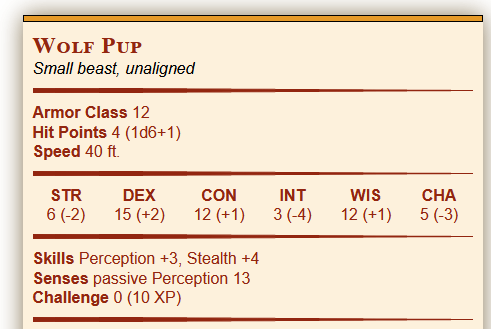
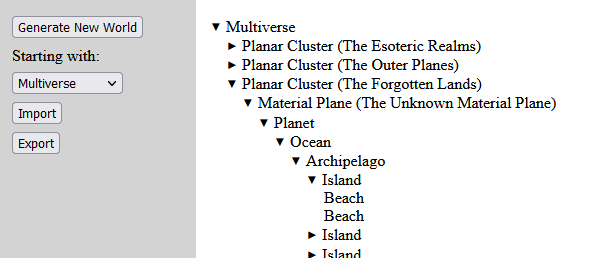

Erik Spitzer
Professional Software Engineer, Hobbyist Game Modder
Hello! My name is Erik. I got started in software development many years ago with a Java class in high school. After that, I went to DePaul University where I graduated in 2009 with a degree in Computer Games Development. While at DePaul I worked with a variety of programming languages including C++, C#, AS3, and Python as well as platforms such as XNA, Unreal 3, and later Unity 3D.
I'm currently employed as a senior engineer at a healthcare advertising agency in Chicago. I started out by making native iOS apps in Objective C but these days my work is mostly node.js with a splash of ASP.net and the occasional bit of PHP and Python.
In my spare time I like to make mods and tools for some of my favorite games, all of which are open source and available to anyone who wants to use or modify them. Most of my portfolio, such as it is, can be found on Github but you can find some of the highlights below:
Monster Scaler
My latest project, this is a calculator for Dungeons and Dragons 5th Edition that takes an existing monster and scales it up or down to a different Challenge Rating, or CR. Started because I play a druid who likes to summon and shape shift, and I was frustrated by the gaps in available creatures at certain CRs. At the moment it has only a few simple beasts, but I plan to expand it by adding more creatures, and potentially the ability for users to create and edit their own creatures.
Fantasy World Generator
Inspired by Nested, this is a random generator that allows a user to generate a random fantasy world (or several). It starts by generating a high level parent node (which could be anything from a planet to an entire multiverse) with several children. When a child node is expanded additional child objects are randomly generated as needed.
The goal here was twofold: To allow users to generate random content at any level that is required, from entire worlds to NPCs in a tavern, but also to allow them to manually enter existing content and use random generation to fill in the gaps. At the moment it is very far from complete and is in need of many more objects, once I get back to it. While it was created with Dungeons and Dragons in mind, it is currently rule agnostic.
Spellbook Manager
Also intended for Dungeons and Dragons 5th Edition (guess what I've been doing with my spare time when not on Github), this is a tool I created to help my very wizard heavy party identify spells they could share, and the associated costs. Spellbooks can be entered and the tool will list what spells can be copied into one book from the others, as well as the time and gold required to do so. Unlike most of these projects, this one is actually reasonably complete.
Everquest Faction Dance
It's not all DND 5e. This is a tool I made to enable my Everquest completionism. Everquest is a game with hundreds of factions that have complex relationships with each other. Often making some factions like you more will damage your standing with others, but sometimes carefully choosing the methods you use to increase faction standings will allow you to work on some factons first, then repair others later. This is known as "faction dancing" in the community, and this was a tool I created to help determine the optimal path for factions that can be safely increased. It is missing many newer factions, and a few features I thought of after shelving it, but is populated enough to work for various older factions.
Bannerlord Disable Companion Donations
It's not all Javascript either. This is a simple mod I made for Mount and Blade 2: Bannerlord which prevents the player's companions/relatives from donating their troops to settlements they enter.
Warband Autotrader
A mod for Mount and Blade: Warband that makes it easier to buy and sell trade goods. Users can set thresholds for buy/sell prices for various goods, which are then automatically bought and sold when the player visits towns or villages.
Dickplomacy Reloaded (Contributor)
Unlike newer games like Skyrim which let you pick and choose your mods, Warband modules are loaded one at a time. As a result, mod developers for Warband assemble many small mods into larger mod packs. I knew if I wanted my Autotrader mod to see any real use, it would need to be included in an existing mod pack. Dickplomacy Reloaded was a prime candidate since it was one of the more popular open source mods (not just because of the adult content, it also has lots of interesting gameplay enhancements [but maybe it is a little bit because of the adult content]). With the previous developer's blessing I incorporated my Autotrader mod, and then once I had my hands in the code I fixed a few other outstanding issues.